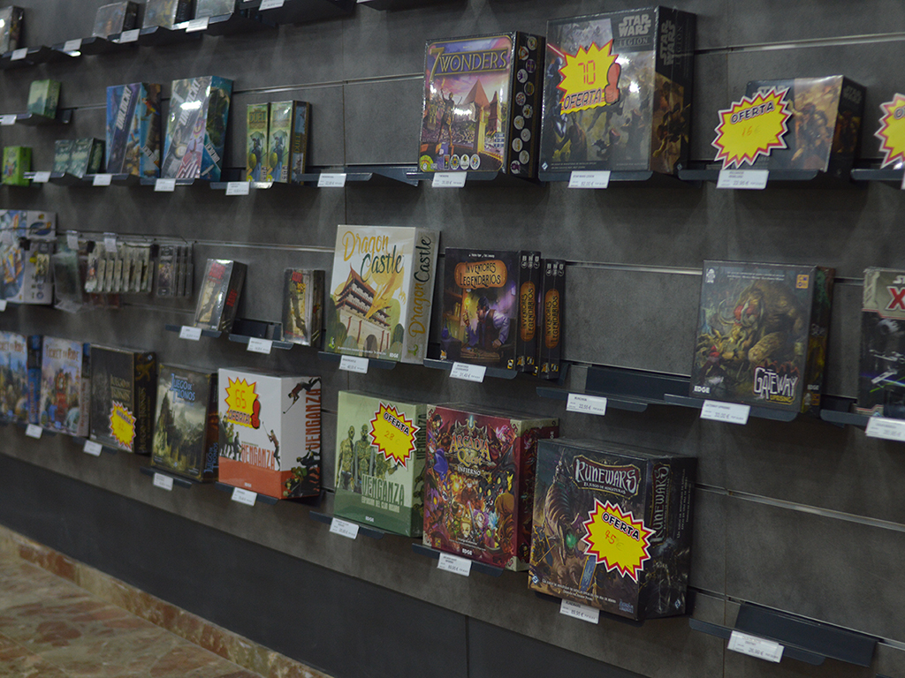
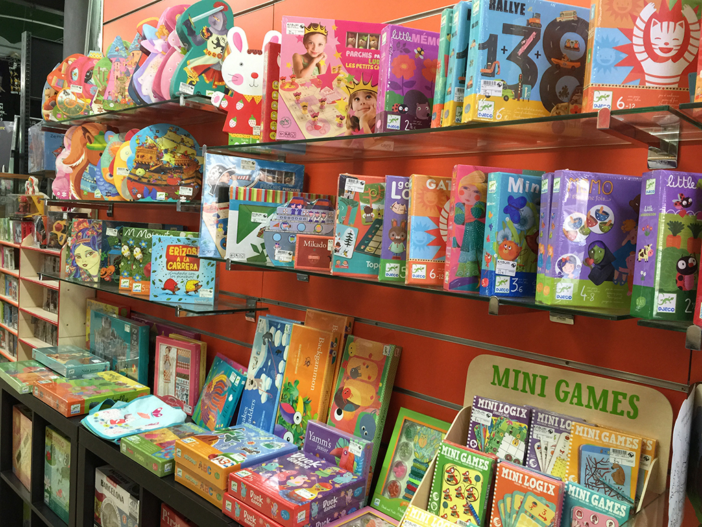

Jocs de taula
Divertits jocs de taula que et transportaran a una altra hera, un altre món. Diferents tipus de jocs dissenyat per a segons que va publicar, es troben en les següents botigues que et donarem. No has jugat mai? Doncs pots ser dos tipus de persona:
Una a la que mai ha trobat un joc que li cridés l’atenció però vol provar-los, si és així, els dependents de cada botiga estaran disposats a buscar-te un.
I l’altra persona a qui no li agrada jugar a ser un cavaller, derrotar al teu oponent mitjançant cartes i més, et recordem que aquesta és només la primera secció i si no t’agrada, simplement pots tranquil·lament veure un altre apartat.
4 dados
En aquesta botiga pots trobar jocs de taula fins a merchandising de tot tipus. A més “4 dados” ha obtingut un lloc com editorial de jocs, això vol dir que a més de trobar jocs coneguts, també trobaràs jocs exclusius per la mateixa botiga.
InGenio
En InGenio a part de poder comprar sobres de cartes, capses de cartes o jocs de tauler; pots participar o veure torneigs que celebra la botiga! Els premis poden ser des de xecs de la tenda, fins a cartes especials. No to pots perdre!
Play
T’agraden les consoles retro? Les cartes Magic complicades d’aconseguir? Si has pensat que si, Play és la teva tenda! Aquí pots trobar des de guies de llocs, fins i tot les consoles més antigues de primera o segona mà, a més et pots trobar amb llocs importats de diferents llocs del món, com per exemple Amèrica, Japó, Europa i molt més.
Júpiter
Aquí trobaràs una gran varietat d’articles de jocs de taula d’allò més peculiar. Poden ser qualsevol tipus de joc; de cartes, de daus, etc. A part d’això també fan concursos amb premis increïbles.